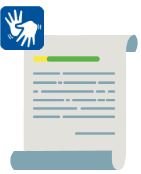
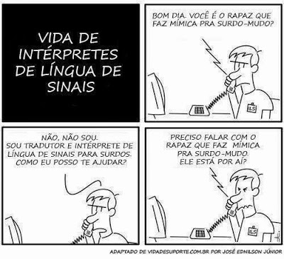

A Libras a partir de documentos oficiais
1 Introdução
![]()

Fonte: Equipe DocentEPT
É muito comum, ao se pensar sobre a pessoa surda, o foco ser no tanto em que sua audição “funciona” ou não. Mas já compreendemos que ser surdo está para além das questões biológicas. A ênfase não está apenas em seu percentual de audição, mas em como sua diferença linguística e cultural o constitui.
Neste livro, estudaremos como a legislação considera essa diferença linguística, especificamente no contexto educacional, para que possamos problematizar as possíveis práticas de inclusão e acessibilidade na educação profissional.
2 A lei de Libras
Conhecida como a Lei da Libras, a Lei 10.436 de 2002 reconhece a Libras como meio de comunicação e expressão das comunidades surdas no Brasil. Antes desta Lei, outras reconheciam a forma “diferente” das pessoas surdas de se comunicar, mas não nomeada como língua.
Na Lei da Libras, o termo “linguagem de sinais” não aparece dando destaque corretamente para “Língua Brasileira de Sinais”, enfatizando que estamos falando de uma língua, e não de gestos aleatórios sem base linguística para seu uso e compreensão.
"Art. 1º É reconhecida como meio legal de comunicação e expressão a Língua Brasileira de Sinais - Libras e outros recursos de expressão a ela associados.
Parágrafo único. Entende-se como Língua Brasileira de Sinais - Libras a forma de comunicação e expressão, em que o sistema linguístico de natureza visual-motora, com estrutura gramatical própria, constituem um sistema linguístico de transmissão de ideias e fatos, oriundos de comunidades de pessoas surdas do Brasil" (BRASIL 2002).
Por meio da lei 10.436[1], a Libras é reconhecida como língua. Esse reconhecimento é um marco para as comunidades de pessoas surdas, visto que a sua diferença linguística foi compreendida e especificada em Lei. No Brasil, portanto, a Língua Portuguesa é a única língua oficial, e outras são reconhecidas, como as línguas indígenas e a Língua Brasileira de Sinais. Sobre a importância desse reconhecimento referente à Libras, Lacerda (2014) diz:
Posteriormente, o Decreto 5626 de 2005[1] regulamenta a Lei de Libras e apresenta entre outros aspectos: o direito das pessoas surdas ao acesso às informações por meio da Libras; do direito da comunidade surda a uma educação bilíngue; o atendimento em Libras nos espaços públicos e privados; e a formação necessária atuar como professor de Libras e tradutor intérprete entre outros aspectos.
Além de regulamentar a Lei de Libras, este mesmo Decreto regulamenta o artigo 18 da Lei 10.098, de 19 de dezembro de 2000. Essa lei “Estabelece normas gerais e critérios básicos para a promoção da acessibilidade das pessoas portadoras de deficiência ou com mobilidade reduzida, e dá outras providências”. Visto que a Língua Brasileira de Sinais ainda não era reconhecida naquela época, o nome que se referia a ela era Linguagem de sinais. Nesta Lei, a forma diferente de se comunicar da pessoa surda já tinha destaque legal, incluindo a atuação do profissional intérprete (BRASIL, 2000).

Assistam, no vídeo a seguir, aos destaques que esse Decreto apresenta relacionados à comunidade surda.
[1] Acesse o texto do Decreto no link http://www.planalto.gov.br/ccivil_03/_ato2004-2006/2005/decreto/d5626.htm
3 O tradutor e Intérprete na Legislação
O Decreto 5626 especifica a formação do profissional que fará a mediação, tradução e interpretação do par linguístico Libras-Português. Se a Libras é reconhecida como língua, é importante considerar, portanto, a necessidade da presença do profissional tradutor e intérprete que mediará a comunicação e interação nos espaços. Ou seja, é o mesmo processo que ocorre nas línguas orais, quando intérpretes atuam na mediação na comunicação e interação, por exemplo, de uma fala em Inglês para Português ou vice-versa.
No caso da mediação do par linguístico Libras-Português, o profissional é o tradutor e intérprete de libras-português (Tilsp). Esse profissional atua no contexto comunitário para acesso a serviços públicos como no contexto educacional, jurídico e de saúde, mas também em contextos de conferências, artístico-cultural, em mídias televisivas entre outros. A Lei 12.319 de 2010 é a que regulamenta essa profissão.
No contexto educacional, existem mais profissionais Tilsp, devido à grande demanda de alunos surdos na educação básica, profissional e tecnológica, até a graduação e pós-graduação. Assistam aos vídeos e conheçam mais sobre esse profissional importante na educação de surdos.

4 Atuação do tradutor e intérprete em sala de aula
Conheça como o trabalho do Tradutor e Intérprete é desenvolvido em uma instituição federal, no caso específico do Instituto Nacional de Educação de Surdos (INES), localizado no Rio de Janeiro (RJ). Essa organização atua em vários Institutos Federais no país que possuem alunos surdos.

Podemos nos perguntar: por que esse profissional se chama "tradutor e intérprete"? O objetivo é destacar os dois tipos de atuação na mediação de uma língua para a outra.
A tradução se refere à dinâmica de traduzir de uma língua escrita para uma língua de sinais ou vice-versa. Na educação, isso ocorre, por exemplo, nas traduções de provas escritas em Português para vídeo provas em Libras, ou quando o aluno surdo sinaliza e sua fala é registrada em português escrito. O mesmo para as traduções de editais.
A tradução, na maioria das vezes, ocorre em momentos consecutivos, ou seja, não necessariamente ao vivo, simultâneo. O tradutor recebe o material que precisa de tradução e depois já o disponibiliza pronto. Nesse tipo de tradução, ele tem um tempo maior de preparação.
Ao contrário da tradução, a interpretação ocorre em momentos simultâneos. É quando a pessoa ao vivo fala em uma língua oral, o português, por exemplo, e o profissional interpreta ao mesmo tempo. Isso também se aplica para o caso de uma pessoa surda que esteja falando em Libras e o profissional interpreta a fala dele em Português.
Podemos citar, como exemplo, a atuação em sala de aula quando o professor explica o conteúdo do quadro e o profissional interpreta simultaneamente. Ou quando o aluno surdo faz algum comentário ou pergunta em Libras e o profissional interpreta para a língua portuguesa de forma oral.
A tradução e Interpretação são modalidades diferentes que demandam de uma organização, estudo e preparação por parte do profissional para realizar a mediação para o aluno surdo com qualidade. É importante que as pessoas que trabalharão com esse profissional também tenham essa compreensão para que trabalho colaborativo seja desenvolvido. Nota-se, portanto, que esse profissional sempre atuará na tradução e interpretação, o que justifica o nome dado a ele: tradutor e intérprete de Libras-Português (Tilsp).

Fonte: http://www2.ccv.ufs.br/ccv/concursos/libras2015/files/provas/Prova%20Curso%20Letra%20-%20Libras%202015.pdf
5 A Lei Brasileira de Inclusão
Fonte: Equipe DocentEPT
A Lei 13.146, de 6 de julho de 2015, conhecida como LBI, também destaca a diferença linguística da pessoa surda, ao tratar, no artigo 27, inciso IV, sobre a “oferta de educação bilíngue, em Libras como primeira língua e na modalidade escrita da língua portuguesa como segunda língua”.
Além de considerar a formação do tradutor e intérprete e especificar sua atuação em sala de aula, desde a educação básica até a pós-graduação, a mesma lei específica sobre o direito da pessoa surda em receber o atendimento educacional especializado por professores especialistas.
Nota-se, portanto, outro profissional que atuará em colaboração com o professor regente para a inclusão do aluno surdo: o professor de AEE - Atendimento Educacional Especializado (BRASIL, 2015).
A mesma lei apresenta também a obrigatoriedade das traduções de editais e suas ratificações nos processos seletivos; que as produções audiovisuais tenham a janela com a tradução da Libras e produção de artigos e material didático acessíveis em Libras (BRASIL, 2015).
Podemos notar que a acessibilidade para a pessoa surda não se restringe ao espaço de sala de aula. Compreendemos que qualquer aluno circula em todos os ambientes, setores, além de acessar o site da instituição. Sendo assim, é importante que a acessibilidade linguística seja pensando em todo o contexto da instituição, o que demandará de traduções para além da dinâmica de sala de aula. Assim, a Libras circula nos espaços possibilitando o acesso ao aluno surdo.
Acesse o guia sobre a LBI no link https://www.maragabrilli.com.br/wp-content/uploads/2016/03/Guia-sobre-a-LBI-digital.pdf
6 Documentos Institucionais do Ifes
As Leis e os Decretos apresentados até o momento são considerados base para que documentos oficiais que norteiam a inclusão e acessibilidade no contexto educacional contemplem as especificidades da pessoa surda e sua diferença linguística. Isso se aplica à Educação Profissional e Tecnológica.
Por exemplo, no Instituto Federal do Espírito Santo (Ifes), a resolução 55[1], que trata da inclusão de alunos, apresenta, entre outros aspectos, a importância do profissional Tilsp na mediação da comunicação e defende que tê-lo nos espaços educacionais é um direito do aluno surdo, atendendo ao princípio da equidade.
Outro documento institucional que trata de aspectos de acessibilidade para a pessoa surda é a instrução Normativa (IN) nº 01/2020[2], de 25 de maio de 2020. A IN normatiza e orienta sobre os princípios e os procedimentos operacionais de acessibilidade para elaboração de materiais e tarefas didático-pedagógicas na Educação a Distância, nas atividades pedagógicas não presenciais e no ensino híbrido para discentes com necessidades específicas no Ifes. Para a pessoa surda, a IN destaca o que constituem barreiras para a acessibilidade no Ambiente Virtual de Aprendizagem e os encaminhamentos para o atendimento que respeite a modalidade de comunicação da pessoa surda.
Portanto, podemos concluir que o direito à educação de qualidade com respeito à diferença linguística da pessoa surda é lei. Sendo assim, pensar em adequações metodológicas, ter a presença de profissional para a mediação e que o espaço circule com a Libras são necessários para que o aluno surdo seja atendido na sua especificidade.
[1] Resolução do Conselho Superior do Ifes nº 55/2017 - Institui diretrizes operacionais para atendimento alunos necessidades especiais.
Link para acesso https://www.ifes.edu.br/conselhos-comissoes/conselho-superior?start=10
[2] Instrução Normativa do Ifes nº 01/2021 - Normatizar e orientar sobre os princípios e os procedimentos operacionais de acessibilidade para elaboração de materiais e tarefas didático-pedagógicas na Educação a Distância, nas atividades pedagógicas não presenciais e no ensino híbrido para discentes com Necessidades Educacionais Específicas no Ifes.
Link para acesso https://proen.ifes.edu.br/images/stories/INSTRU%C3%87%C3%83O_NORMATIVA_N_01-2020_DE_25_DE_MAIO_DE_2020.pdf
7 Conclusão
Ao final deste livro, é possível compreender que a Libras tem amparo legal para seu uso pela comunidade surda, o que torna necessário o aumento da sua presença nos espaços. É importante reconhecê-la como língua e tornar possível que esta língua faça parte das ações e práticas inclusivas em todos os contextos, o que inclui a da educação profissional tecnológica.
O aluno, ao ser matriculado, deve frequentar outros espaços e setores que fazem parte da escola. Sendo assim, restringir o uso ou tradução da Libras apenas à sala de aula contribui para a exclusão do aluno surdo nos mais diversos temas abordados e tratados no ambiente escolar.
Sendo assim, é necessário pensar, em parceria com os outros departamentos e setores, como tornar a comunicação acessível em Libras nesses espaços, como biblioteca, protocolo, cantina/refeitório, registro acadêmico, coordenadorias de cursos, entre outros. Isso também se aplica para os eventos organizados na escola.
Portanto, compreendemos que é direito do aluno surdo o uso da língua que o deixa mais confortável, a Libras, mesmo que ele seja o único da Escola. Esse direito não é atrelado à língua falada pela maioria, ou seja, se existem mais falantes de Português, então, ele que precisaria se ajustar a essa realidade.
De acordo com a Lei, o atendimento a sua especificidade não está ligado à quantidade de pessoas que são diferentes dele. A sua diferença linguística precisa ser respeitada desde o momento em que ele chega. Além disso, a legislação reconhece o trabalho do tradutor e Intérprete de Libras-Português, que fará a mediação da comunicação nos espaços. Sendo assim, é necessário envolver esse profissional nas ações do espaço escolar, para que as práticas de inclusão do aluno surdo sejam efetivadas, conforme lhe é de direito.
Referências
![]()
BRASIL. Decreto nº 5626. Regulamenta a Lei nº 10.436, de 24 de abril de 2002, que dispõe sobre a Língua Brasileira de Sinais – Libras e o art. 18 da lei nº 10.098, de 19 de dezembro de 2000. Diário Oficial da União, Brasília, 22 dez. 2005
BRASIL. Lei 13.146. Institui a Lei Brasileira de Inclusão da Pessoa com Deficiência (Estatuto da Pessoa com Deficiência). Diário Oficial da União, Brasília, 6 jul. 2015.
BRASIL. Lei nº 10.098. Estabelece normas gerais e critérios básicos para a promoção da acessibilidade das pessoas portadoras de deficiência ou com mobilidade reduzida, e dá outras providências. Diário Oficial da União, Brasília, 19 abr. 2000.
BRASIL. Lei nº 10.436. Dispõe sobre a Língua Brasileira de Sinais – Libras e dá outras providências. Diário Oficial da União, Brasília, 24 abr. 2002.
BRASIL. Lei nº 12.319. Regulamenta a profissão de Tradutor e Intérprete da Língua Brasileira de Sinais - LIBRAS. Diário Oficial da União, Brasília, 1 set. 2010.
INSTITUTO FEDERAL DO ESPÍRITO SANTO. Instrução Normativa do Ifes nº 01, de 25 de maio de 2020. Normatizar e orientar sobre os princípios e os procedimentos operacionais de acessibilidade para elaboração de materiais e tarefas didático-pedagógicas na Educação a Distância, nas atividades pedagógicas não presenciais e no ensino híbrido para discentes com Necessidades Educacionais Específicas no Ifes. Vitória, 2021.
INSTITUTO FEDERAL DO ESPÍRITO SANTO. Resolução do Conselho Superior do Ifes nº 55. Vitória, 2017.
INSTITUTO FEDERAL DO ESPÍRITO SANTO. Resolução do Conselho Superior do Ifes nº 55, de 19 de dezembro de 2017. Institui diretrizes operacionais para atendimento alunos necessidades especiais. Vitória, 2017.
LACERDA, Cristina B. F. de. Intérprete de Libras: atuação na educação infantil e no ensino fundamental. 6ª ed. Porto Alegre: Mediação, 2014.

Ficha técnica
|
Título |
Mitos em torno da Língua de Sinais |
|
Autoria |
Carla Rejane de Paula Barros Caetano (2021) / Fernanda dos Santos Nogueira (2021) |
|
Design gráfico |
Camila Karoline Justino Marques |
|
Design instrucional |
Michele Silva da Mata |
|
Revisão textual |
Cláuberson Correa Carvalho |

Este trabalho está licenciado com uma Licença Creative Commons - Atribuição-NãoComercial-CompartilhaIgual 4.0 Internacional.